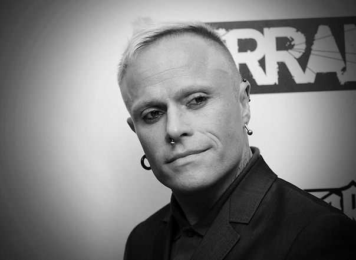

Кит Чарльз Флинт (англ. Keith Charles Flint); родился 17 сентября 1969, Редбридж, Лондон — 4 марта 2019, Норт-Энд, Эссекс, Великобритания) — британский музыкант, участник электронной группы «The Prodigy» с момента её основания и до конца жизни.
Кит Чарльз Флинт родился в Редбридже 17 сентября 1969 года. Семья Кита была не совсем благополучной; повзрослев, он перестал общаться с родителями. Родители часто переезжали, и Киту приходилось учиться в разных школах. Из-за дислексии мальчик учился в основном на тройки. В середине 1970-х годов вместе с родителями переехал в Спрингфилд в графство Эссекс. В молодости отец выгнал его из дома, и Кит отправился путешествовать. Подрабатывал торговцем на уличных рядах в Израиле, работал кровельщиком в Великобритании. С 1988 года стал постоянным участником танцевальных вечеринок на автостраде M25
В конце 1980-х Флинт встретил диджея Лиама Хоулетта в рейв-клубе, где положительно оценил музыку Хоулетта. Флинт попросил у Хоулетта его кассету и, прослушав её, вернулся к Лиаму, но уже с куда большим энтузиазмом: Флинт настойчиво утверждал, что Хоулетт должен играть свои треки уже на сцене, а сам Флинт и его друг Лирой Торнхилл могут быть на подтанцовке. Так, в 1990 году образовался новый коллектив — «The Prodigy».
С самого начала участия в группе Флинт был просто танцором, но в 1996 году впервые проявил себя как вокалист на сингле «Firestarter». В видео, которое сопровождало сингл, Флинт был представлен в своём новом образе, который стал фирменной маркой The Prodigy. Тенденция с вокалом продолжилась в новом сингле «Breathe», где он пел уже с Максимом Реалити. В следующей работе The Prodigy, альбоме «The Fat of the Land», было представлено несколько песен, в которых спел Флинт: «Breathe», «Serial Thrilla», «Firestarter» и «Fuel My Fire» (кавер на L7). Этот альбом стал наиболее успешным альбомом коллектива и сделал Флинта лицом The Prodigy. Следующая работа «Baby's Got a Temper», релиз которой состоялся в 2002 году, во многом испытала влияние панк-стиля самого Флинта, хотя позже Хоулетт сам описывал песню как слишком нехарактерную для группы. В этот период между Флинтом и Хоулеттом возникли некоторые разногласия, что, возможно, стало причиной отсутствия вокала Флинта на следующем альбоме «Always Outnumbered, Never Outgunned», хотя Флинт спел в «Hotride (El Batori Mix)» из сингла «Hotride».
На альбоме The Prodigy, «Invaders Must Die», релиз которого состоялся 23 февраля 2009 года, Флинт вновь участвует в записи нескольких треков из альбома: «Omen», «Colours», «Take Me to the Hospital», «Run with the Wolves» и «World’s On Fire» «Piranha».
На вышедшем 27 марта 2015 года альбоме «The Day Is My Enemy» Флинт принимает участие в записи треков «Nasty», «Rebel Radio», «Ibiza», «Get Your Fight On», «Invisible Sun», «Wall Of Death» и «Rok-Weiler».
На последнем альбоме The Prodigy, «No Tourists», релиз которого состоялся 2 ноября 2018 года, Кит участвует в записи треков «We Live Forever», «Champions Of London» и «Give Me A Signal».
С 1999 до 2000 года встречался с телеведущей Гейл Портер, которая бросила его ради музыканта Дэна Хипгрейва.
В 2004 году на протяжении семи месяцев состоял в отношениях с хип-хоп-исполнительницей Джентиной Чапман.
По сообщению британского таблоида «The Sun», на протяжении нескольких лет тайно встречался с некой Фэй Кэлби, у которой было трое детей.
В 2006 году женился на японской модели и диджее Маюми Каи, также известной как DJ Gedo Super Mega Bitch, с которой познакомился во время гастролей. По словам Кита она спасла его от наркотической зависимости. У пары было несколько собак, детей не было. В 2019 году они расстались и стали жить отдельно. Из-за предстоящего бракоразводного процесса Кит Флинт впал в депрессию и был вынужден выставить на продажу свой любимый дом в графстве Эссекс, часть которого суд передал Маюми.
«Я ни на что не коплю деньги. Я все сразу же обналичиваю. Я всегда чувствовал, что когда мне надоест, я убью себя… Клянусь, это не суицидальные мысли».Из интервью Кита Флинта редактору журнала «FHM» Мэтту Блейку, 07.04.2015.
Кит Флинт был найден повешенным утром 4 марта 2019 года в своём доме в городе Данмоу в графстве Эссекс. По предварительным данным, полиция не обнаружила признаков насильственной смерти музыканта. По данным официальной страницы группы в Instagram музыкант совершил самоубийство. Лиэм Хоулетт подтвердил, что Кит Флинт покончил жизнь самоубийством. Причиной самоубийства называют депрессию, вызванную расставанием с женой. Посмертный анализ выявил в крови Кита Флинта следы алкоголя, кокаина и кодеина.